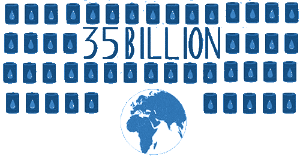
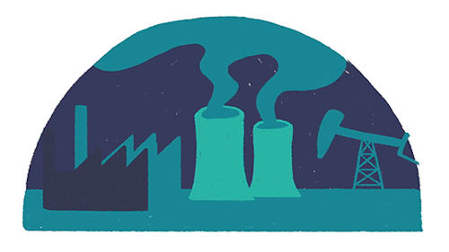

What is "Energy Conservation"?
The question is unbreakable, isn't it?
Wanna find out why? Scroll down!

A world engulfed up in oilEnergy is something that has satisfied the homo-sepians for quite a long time and one can easily rest one's eyes upon how we have modified the energy itself.
From electrical energy to heat energy and from chemical energy to light energy, we have left no stone unturned in trying to accumulate more convenience in our lives.
But still, you might feel, something doesn't fit right in. What is it? The bulge in this way to development? The bulge that will grow even larger as we move forward? Isn't the the present way of fulfilling our desire, dragging us into a ditch; a ditch of death and suffer? In other words, the present situation is licked upon by the reason that we are irresponsible. Earilier, a world of pleasures has now turned up being no different from hell, all because of our karmas. Even after the introduction of a plethora of other sources of energy including solar power, hydropower and wind power, we are stuck to the path of our annihilation, and are digging up our own grave.
Can you see the Earth of the so-called "develpment era" submerged in oil, more than it's present in the aloo tikkis you eat? Scroll down to see more!

Ecstasy and the desire for human development runs through my nerves as I am introduced to the new small-stepped eco-friendly ways of acquiring energy and thus, conservation. Hydrodams and windmill power stations have now been instigated and are working day and night to spread the network. A smile hijacking a person's face is now their ultimate goal. A regular check on the factories is also being done so that no electricity is wasted. The thoughts of the scientists are now punctuated by the desire and will of designing solar-powered and hydrogen-powered vehicles too. Though the plight of the world may be pathetic presently and these renewable sources o energy only power 13% of the world's total electricity, but still, one shall always remember that light will shine again in the human eye.
Now allow me to bask light upon the privilege of these renewable resources.

Solar Power
As the terms suggests, solar refers to the sun. And thus, Solar Power refrs to the Sun's power. But how exactly are we supposed to use the Sun's power?  Confusing, isn't it? The answer is though, simple. The photovoltaic effect is the principle behind it. In it, the sun's rays are converted into a seried of electrons with the help of photovoltaic cells and are instigated and agitated to form AC current. This AC current can then be used to power our homes, and even large factories. Presently, many companies have destined their goals to make large solar parks in India, for example, Adani Green which has already accomplished the task of making the largest solar park in India which powers almost the whole state of Tamil Nadu. It has even larger plans for the future.
Confusing, isn't it? The answer is though, simple. The photovoltaic effect is the principle behind it. In it, the sun's rays are converted into a seried of electrons with the help of photovoltaic cells and are instigated and agitated to form AC current. This AC current can then be used to power our homes, and even large factories. Presently, many companies have destined their goals to make large solar parks in India, for example, Adani Green which has already accomplished the task of making the largest solar park in India which powers almost the whole state of Tamil Nadu. It has even larger plans for the future.

Hydro Power
Originated from the greek word hudor, the word "hydro" refers to water and thus, hydro power means the energy generated from water. This is going to be a piece of cake as I will further explain it. For the generation of hydroelectricity, hydro electric dams are needed. In these dams, the water is allowed to flow down at a high pace from a high structure, into a water body. On falling, the water moves the turbine at the bottom by its pressure. The turbine moves to generate electricty that is transferred to the generator and ultimately, to the transformer which converts the elctricity intto a usable form. The water is then again brought up to the high-leveled structure This can be used for powering large regions without any further human intervention. Everything is automated after it's built. This method of electricity generation is not introduced much in India but I am sure, that soon, it will be.

Other mediums
Scientists are devising out many more ways to convince electricity generation. These include using hydrogen and oxygen together in feul cells to generate elctricity and many others. Let me explain you the principle behind the feul cells now. In a feul cell, the chemical properties of hydrogen and oxygen dash in. They bond with each other and release the electrons on the electrode. The electrons are then allowed to flow together, which is electricity. Cool, isn't it?